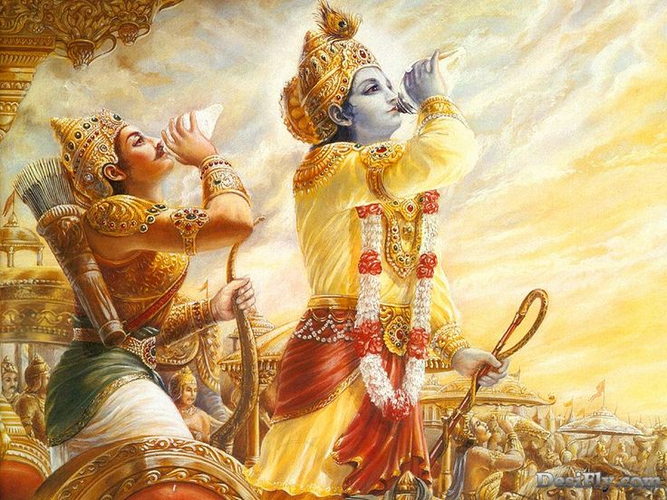

সরল ভাবার্থ
এছাড়াও ধৃষ্টকেতু, চেকিতান, বলবান কাশিরাজ, পুরুজিৎ, কুন্তিভোজ এবং শৈব্যের মতো শ্রেষ্ঠ মানুষেরা রয়েছেন।
বিস্তারিত ধর্মীয় ব্যাখ্যা
দুর্যোধন পাণ্ডব পক্ষের যোদ্ধাদের নাম এক এক করে বলে যাচ্ছেন। ধৃষ্টকেতু ছিলেন শিশুপালের পুত্র, কিন্তু পিতার অধর্মের পথ ত্যাগ করে তিনি ধর্মের পক্ষে পাণ্ডবদের সাথে যোগ দিয়েছিলেন। এটি একটি বড় ধর্মীয় শিক্ষা—পারিবারিক সম্পর্ক বা পূর্বপুরুষের আদর্শের চেয়েও ব্যক্তিগত বিবেক ও ধর্ম বড়। চেকিতান এবং কাশিরাজ ছিলেন অসীম সাহসী এবং ধার্মিক। কুন্তিভোজ ছিলেন কুন্তিদেবীর পালক পিতা, যিনি আত্মীয়তার বন্ধন ও ন্যায়ের টানে এই যুদ্ধে অংশ নিয়েছেন।
'নরপুঙ্গবঃ'—শব্দটি দিয়ে দুর্যোধন পাণ্ডব পক্ষের যোদ্ধাদের পুরুষশ্রেষ্ঠ হিসেবে অভিহিত করেছেন। যদিও তিনি তাদের শত্রু, কিন্তু তাদের চারিত্রিক শ্রেষ্ঠত্ব ও শৌর্যকে তিনি অস্বীকার করতে পারছেন না। কৌরবদের পক্ষে ১১ অক্ষৌহিণী সৈন্য ছিল আর পাণ্ডবদের মাত্র ৭ অক্ষৌহিণী, তবুও দুর্যোধন এই গুটি কয়েক নাম নিয়ে এতটাই চিন্তিত যে তিনি দ্রোণাচার্যের কাছে তাদের বর্ণনা দিচ্ছেন। আধ্যাত্মিক বিচারে এটি সত্যের জয়। যখন কোনো মানুষ সত্যের জন্য লড়াই করে, তখন তার পাশে যারা দাঁড়ায়, তারা সংখ্যায় কম হলেও তাদের তেজ হয় অসীম। দুর্যোধনের এই তালিকা আসলে ভয়ের তালিকা। তিনি দেখছেন যে ভারতবর্ষের সমস্ত শ্রেষ্ঠ ও নীতিবান রাজারা পাণ্ডবদের পাশে দাঁড়িয়েছেন। এটি তাঁর নিজের অনৈতিক কাজেরই একটি দর্পণ, যেখানে তিনি নিজের পতন দেখতে পাচ্ছেন। ধর্মের এই মহতী শক্তিতে বলিয়ান বীররাই শেষ পর্যন্ত ন্যায়ের শাসন প্রতিষ্ঠা করবেন—দুর্যোধনের মনে এই উপলব্ধি শুরু হয়ে গেছে।

[ছবি: রথারূঢ় কাশিরাজ এবং কুন্তিভোজ সহ অন্যান্য পাণ্ডব হিতৈষী বীরগণ তাদের শঙ্খ হাতে যুদ্ধের শোরগোল তুলছেন।]